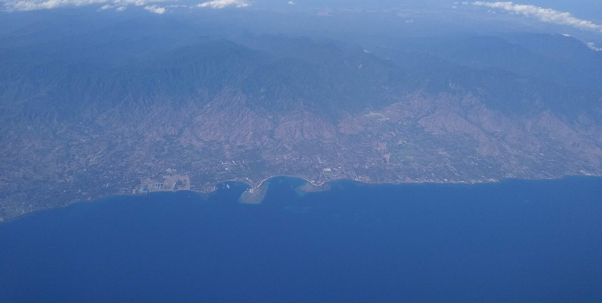

Decide · The file
Evidence in front. Model in the drawer.
The marketing is allowed to be sharp. It is not allowed to be ahead of the source. This is the line between the notes and the rest of the draft.
What is published, and used here
- BPS Bali on arrivals, and the 2019 historical table. ANTARA’s 2025 report is the citation on the homepage and in the arrivals note.
- BPS on star-hotel occupancy, via Databoks, and Airbtics via Villa Finder on the short-stay book.
- BPS Bali on 5.82% GRDP growth in 2025, via ANTARA, and the ABS on 2.6% Australian GDP through the year to December 2025.
- Bank Indonesia’s residential price survey, national and Denpasar, through the second quarter of 2026, and the Bali office’s fourth-quarter 2025 note.
- Cotality and the ABS on Australian dwelling values and the gross yield.
- Pelindo, the SEZ regulation, the Bali Post, JPNN, and the Coordinating Ministry on what is actually underway.
- Kiss Developments and Magnum Estate, quoted as their own claims.
What is still a draft
The areas page carries an internal land CAGR and a base-case IRR. Both are marked uncleared. They are not the spine of these notes. Management fee lines disagree across our own papers. The Tabanan versus Seminyak address is not settled. Christopher’s methodology note, in his sentences, has not landed, so the steel-stud page rests on the 18 September call. The legal memo on what a PT PMA and a notarial lease protect has not landed. The wholesale confirmation for Australian outreach has not landed. Ticket prices on the homepage are the live Carrd lines, flagged for confirmation.
How the method uses the research
Arrivals and accommodation growth are why a real asset can have a guest. The quiet official house index, and the softer listing revenues, are why a guest is not enough. The permit sequence is why a photograph is not enough. The wall is why a handover is not enough. The cap on builds is why a launch calendar is not enough. One operator is the proposal for closing those gaps. It is a proposal about accountability. It becomes a performance claim only when the model has a source row and a lawyer has signed the structure.
Until then the notes are the research behind the marketing, and the marketing has to be able to point at them without borrowing a number they refused.
